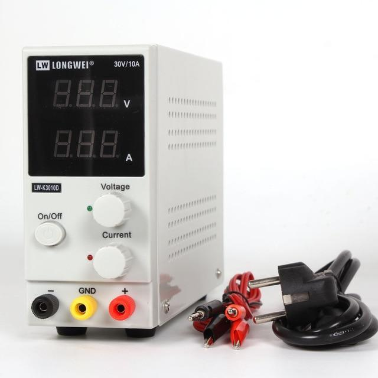
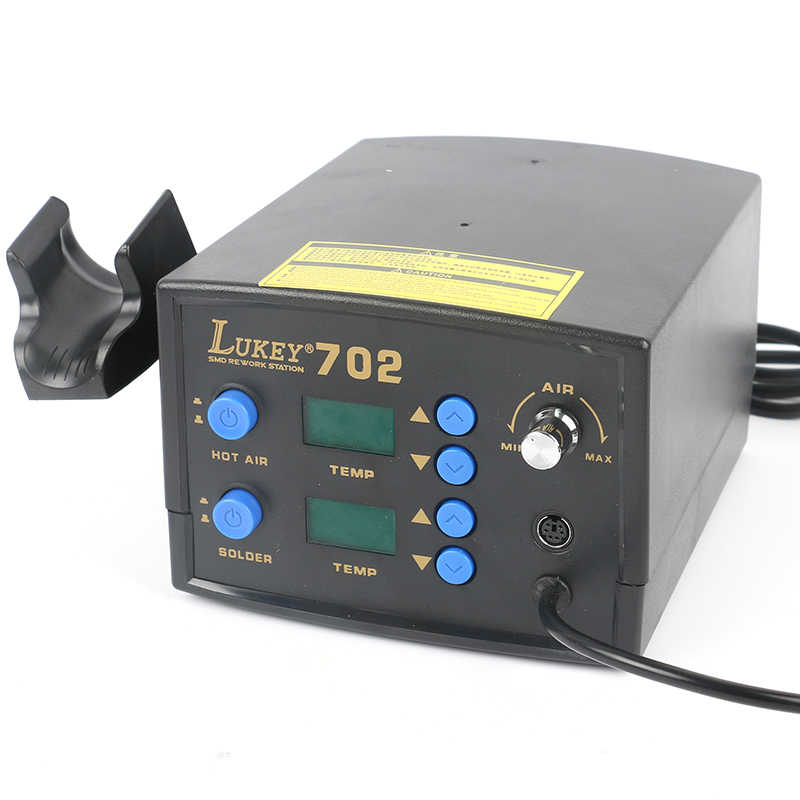
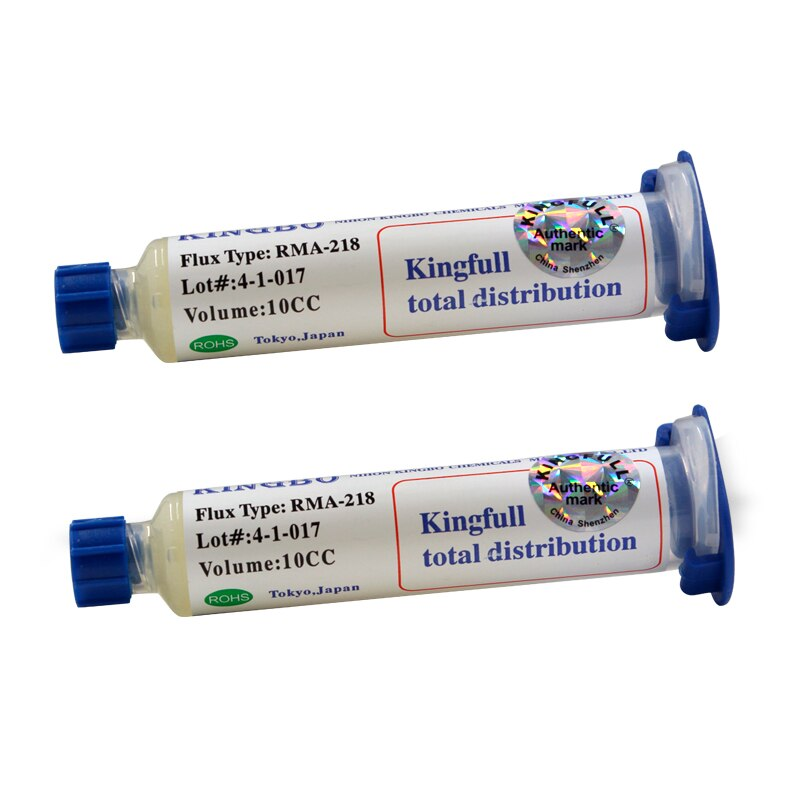

Необходимое оборудование для прошивки эбу начинающим.
Дата: 05.09.2020
Для начала нужно определиться какие автомобили в регионе наиболее часто встречаются. В большинстве городов это автомобили ВАЗ. Вот для этих машин имеется много бесплатного софта для прошивки. Потребуется лишь K-Line адаптер и много разных проводочков для подключения источника питания к ЭБУ и самой к-линии. Так же потребуется лабораторный источник питания или аккумулятор 12В, паяльная станция, мультиметр,флюс, припой, паяльный пинцет, набор звездочек, ключи, набор мелких головок , отвертки, лупа или микроскоп(по желанию). Эбу , установленные на ВАЗ до 2010 года: Bosch 1.5.4, Bosch MP7.0, VS-5.1, Январь 5.1, Январь-7.2, Январь-7.2+, Bosch 7.9.7, Bosch 7.9.7+, Ителма/Автэл М73. Все эти блоки легко разбираются и собираются. В большинстве случаев необходимость разбора не обязательна. Снимаются они тоже совсем просто, но на практике бывают случаи, когда владельцы дополнительно прикручивают их для надежности или рядом установлен блок от противоугонки( тут нужно проявить смекалку) . В основном место установки -это центральная часть торпедо. Открутив боковую крышку увидите ЭБУ.
И так , о K-Line адаптерах.
Самый надежный адаптер -это адаптер, собранный на микросхеме FTDI FT232BL. Братья китайцы активно продают адаптеры VAG-COM 409.1 kkl usb. К слову сказать собран он чаще всего на микросхеме ch340/ch341, которая по скорости преобразования медленная , не стабильная или не рабочая вообще. То есть связи с ЭБУ не будет. Так же встречаются и с правильной микросхемой FT232BL , при чем скорость соединения будет 10400 фиксированно. И в добавок встречается такой адаптер с микросхемой FTDI FT232RL , который может не связаться по к-линии , не работать или работать на скорости 9600. В общем нужно внимательно смотреть описание к продукту в самом магазине. Стоимость такого адаптера примерно от 400 рублей. Если взять такой адаптер для личного пользования, то вполне сойдет, но для профессиональной деятельности лучше подобрать что-то получше. Например от НПП "Орион" или K-Line адаптер с гальванической развязкой(такой служит у меня около 7 лет).
Источники питания

Здесь можно использовать обыкновенный аккумулятор на 12в. Либо , чтобы легче передвигать от мотоцикла. Но лучше всего преобрести качественный лабораторный блок питания с током 2 ампера и выходным напряжение 15В. Это минимум, а лучше всего от 3 Ампер и выше, так как на практике бывают эбу , которые потребляют не мало тока.Самый хороший блок в соотношении цена-качество -это LW-K3010D. У него и ток 10Ампер и напряжение аж 32 Вольта на выходе.
Паяльная станция.

Очень нужное оборудование всегда. Так как придется иногда выпаивать различные SMD компоненты, транзисторы , микросхемы, а может и процессоры. Из недорогих рекомендую Lukey 702. Производство Китай. Цена примерно 4500 рублей.
Мультиметр- обязательно, ведь всегда при чип-тюнинге , диагностике и электрике нужно делать измерения сопротивления, напряжения или силы тока.Самый дешевый брать не рекомендую, но и сильно дорогой тоже не нужен. Лучше всего взять со стандартными функциями измерения и с удобными ручками и кнопками.
Флюс паяльный.

Самые дешевые флюсы очень плохо подходят для пайки и при паянии не выполняют своих функций особенно это касается мелких SMD. Рекомендую RMA-218 или RMA-223.Вот в принципе и весь начальный набор оборудования для чип -тюнинга. В следующей статье поговорим о бесплатных программах для прошивки ЭБУ ВАЗ.